Sisteme de lentile
Lumina deviată de o lentilă poate fi deviată suplimentar de o alta − obţii astel un control mai mare asupra luminii, cu rezultate spectaculoase!
 Activitatea experimentală 1
Activitatea experimentală 1
Construieşte o lunetă! Lucrează în echipă.
Pasul 1. Realizaţi un "tub pentru lumină", având lungimea reglabilă, din două tuburi de carton care alunecă uşor, dar fără jos, unul în celălalt
(figura 1).
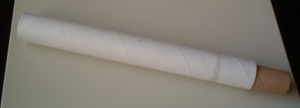
Fig. 1.
Tub de lungime reglabilă, realizat din două tuburi coaxiale.
Puteţi folosi tuburi de carton, unul îngust şi celălalt cu puţin mai larg, din cele pe care se rulează folia de aluminiu şi folia de împachetat.
Fixaţi cu bandă adezivă benzi de carton pe suprafaţa exterioară a tubului subţire pentru a−l adapta la diametrul interior al tubului larg.
Pasul 2. Fixaţi la capătul tubului larg o lentilă convergentă, având distanţa focală mai mare decât a tubului larg, dar mai mica decât lungimea
maximă pe care o poate avea ansamblul celor două tuburi.
Această lentilă este obiectivul lunetei (lentila este îndreptată către obiectul a cărui imagine o doreşti).
Folosiţi pentru aceasta un capac de plastic (din cele care acoperă tuburile de spray) în care să încapă lentila. Decupaţi porţiunea centrală a capacului,
aproape până la margine, pentru ca lumina să poată pătrunde în lentilă.
Pasul 3. Fixaţi la capătul tubului îngust o lentilă convergentă cu convergenţa cât mai mare (lentila detaşabilă a unui ocular de microscop este
excelentă).
Această lentilă este ocularul lunetei - pe aici priveşti.
Luneta este gata! (figura 2)
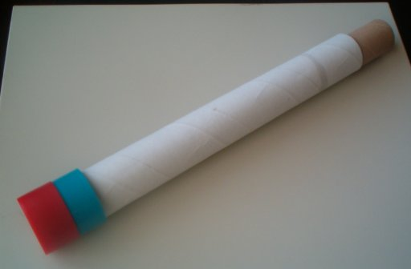
Fig. 2.
Luneta, gata pentru a fi utilizată!
Pasul 4. Îndreaptă obiectivul lunetei către un obiect îndepărtat, pe care−l poţi vedea pe fereastră. Reglează lungimea tubului lunetei, până
când obţii o imagine clară.
Descrie caracteristicile imaginii pe care o vezi!
 Provocarea 1
Provocarea 1
Cât este grosismentul lunetei pe care a−i realizat−o?
Dacă priveşti cu ochiul liber un obiect de mărime H, aflat faţă de tine la distanţa mare D, tangenta unghiului sub care vezi obiectul este:
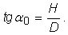
Obiectivul lunetei formează imaginea unui obiect foarte îndepărtat, practic în focar (figura 3).
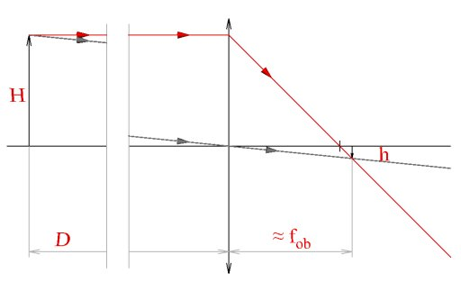
Fig. 3.  Imaginea formată de obiectivul lunetei.
Imaginea formată de obiectivul lunetei.
Din triunghiurile asemenea formate de obiect, imagine şi raza care trece prin centrul lentilei, obţii:
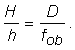
De aici poţi găsi mărimea imaginii formate de obiectivul lunetei:
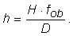
Deoarece 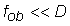, imaginea este mult mai mică decât obiectul, dar este mult mai aproape de tine! Ai putea s−o
priveşti de la distanţa minimă de vedere clară!
Astfel, tangenta unghiului sub care poţi vedea această imagine este:
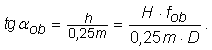
Grosismentul oferit de obiectivul lunetei este, aşadar:
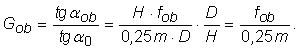
Poţi mări spectaculos grosismentul total dacă priveşti cu o lupă imaginea reală data de obiectivul lunetei! Acesta este rolul ocularului.
Ocularul, funcţionând ca o lupă, are grosismentul:
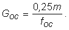
Grosismentul total al lunetei este produsul grosismentelor individuale ale obiectivului şi ocularului (ocularul măreşte de Goc
ori ceea ce a mărit obiectivul, de Gob):
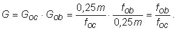
Acesta este grosismentul lunetei astronomice (luneta Kepler).
Grosismentul acestei lunete este cu atât mai mare cu cât este mai mare raportul distanţelor focale ale obiectivului şi ocularului.
Cu un obiectiv având distanţa focală 0,5 m şi un ocular cu distanţa focală 2 cm, poti obţine grosismentul 25!
Provocarea 2
Cât este grosismentul lunetei pe care ai realizat−o?
Cu ajutorul lunetei pe care ai realizat−o, poţi vedea detalii ale obiectelor îndepărtate, invizibile cu ochiul liber!
Când ai de analizat un sistem alcătuit din două (sau mai multe) lentile, poţi utiliza un desen simplu, în care imaginea formata de o lentilă devine obiect
pentru următoarea, şi aşa mai departe (figura 4).
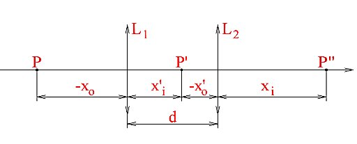
Fig. 4.
Desen pentru analiza unui sistem de lentile.
Nu−ţi face probleme dacă în realitate imaginile nu s−ar forma acolo unde ai desenat! Vei utiliza desenul doar ca să identifici
relaţiile dintre coordonatele obiectului original şi cele ale imaginilor intermediare şi finală.
Cu notaţiile din figura 4, poţi scrie relaţiile:
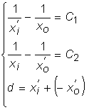
Rezolvând acest sistem de ecuaţii, poţi obţine trei parametrii dacă îi cunoşti pe ceilalţi patru.
Provocarea 3
Cât este convergenţa unui ansamblu de două (sau mai multe) lentile subţiri, acolate (lipite)?
Dacă distanţa d dintre lentile este neglijabilă (lentilele sunt subţiri şi lipite împreună), din ultima ecuaţie a sistemului, rezultă:
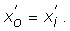
Adunând membru cu membru primele două ecuaţii şi reducând termenii asemenea, obţii:
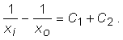

Un sistem de lentile subţiri, acolate, are convergenţa egală cu suma algebrică a convergenţelor lentilelor sistemului.
Poţi acum analiza orice sistem alcătuit din lentile subţiri, fiec că sunt sau nu acolate!